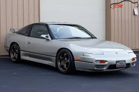

Nissan 240sx
The timeless feature of the 240sx
If you sat down with a pen and paper in hand and made a list of all the qualities that define a “fun to drive” car, you’d probably come up with things like a stiff, light two-door coupe chassis, rear-wheel-drive with an independent suspension all the way around (and lots of aftermarket parts to tweak it with), and a slick-shifting manual transmission. You’d keep it simple to make it affordable, and most importantly, you’d give it a rev-happy engine, perhaps with a turbo. While being an old car, the Nissan 240sx can offer all of that.